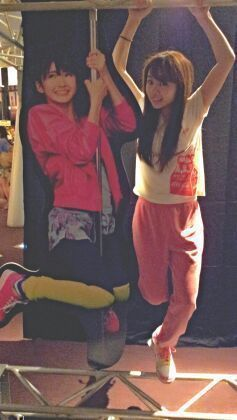

こんばんわあわあ ☆//
ろってぃ−でぇーす。
プリンシパル公演に来ると
実物の大きさのメンバーと
一緒にお写真が撮れるんだねぇ〜
(*´∨`*)
メンバーはそれを今日知って
まひろも 帰る前に
さゆにゃん♪に並んで
撮ってきました )))
どう? いい感じかな(^^)?
ろってぃ−でーす ☆笑

今日☆! !
1部では女中3に選んで頂き
2部では 沢村小坊主役に
選んで頂きました !
本当に本当に嬉しかったです !
投票してくださった皆さん
今日来てくださった皆さん
応援してくださった皆さん
今日も本当に
ありがとうございましたあっ！
沢村は元気な少年 !
特に作りこまない
素の自分のまま話し方でできて
とってもテモテモ
楽しかったです!
とか言いつつ本当は
セリフとか全部 本番始まるまで
必死に台本燃える位
見てたからね(/*´ω`*)/
よし!
明日も頑張ります !
本当にありがとうね(〃∨〃)
もっと色々書きたいんだけど...
また明日ねん♪
皆さん大好き!
おやすみなさい(/〃∨〃)/